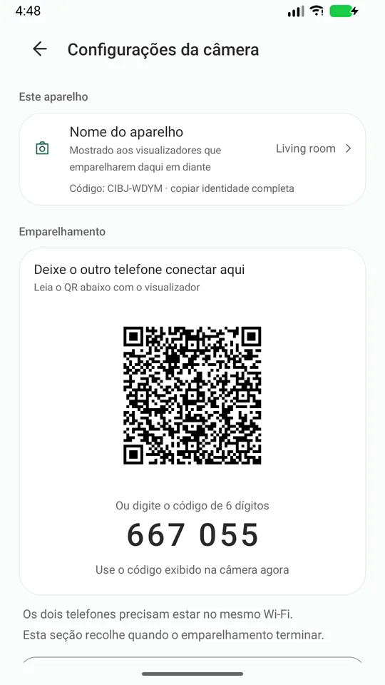
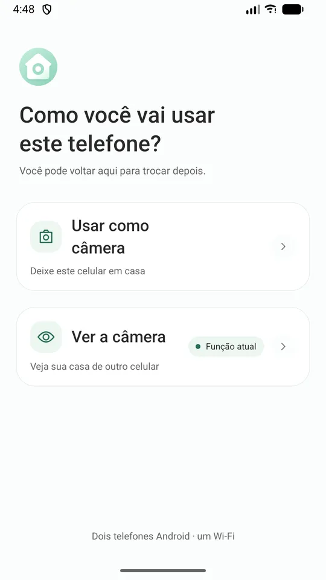
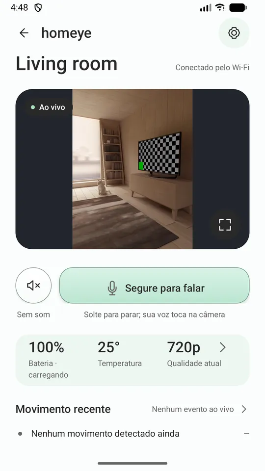
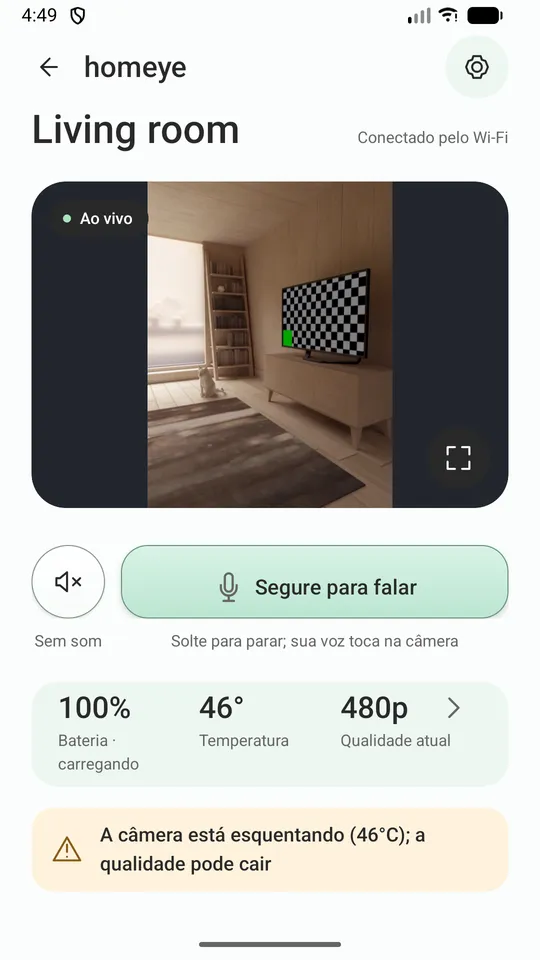
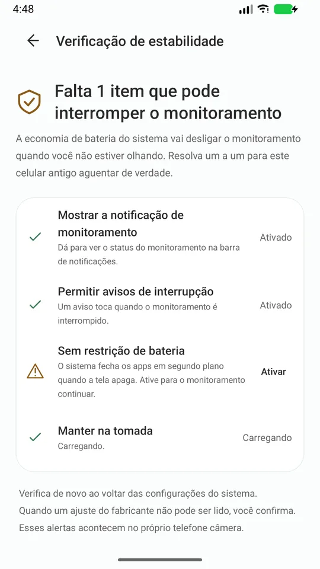
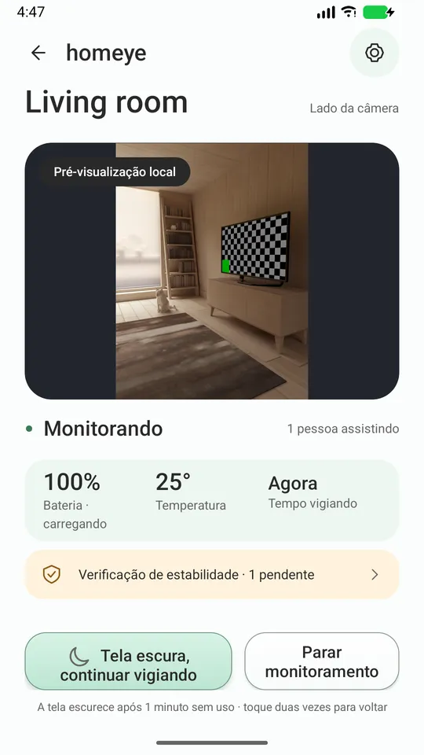

Aquele celular Android velho na gaveta é uma câmera para casa.
Dois celulares, um Wi-Fi. Vídeo ao vivo, conversa nos dois sentidos e avisos de movimento, sem conta, sem nuvem no meio e sem anúncios.
Aquele celular Android parado na gaveta vira câmera assim que você liga na tomada. Sem comprar hardware e sem criar conta.
Ele não engana você
Você saberá quando cair
Você vai saber quando ele cair — não precisa perceber sozinho que a imagem travou.
Diz por que a qualidade caiu
Quando ele baixa a qualidade porque o aparelho está quente ou com pouca bateria, ele diz o motivo. Nunca fica borrado escondido.
Leva você a cada ajuste do sistema
A "Verificação de estabilidade" lista as configurações do sistema que matam apps em segundo plano e leva você até cada uma.
O log só vai para onde você enviar
Se algo quebrar, dá para exportar um registro de diagnóstico e mandar para o desenvolvedor. O registro nunca é enviado sozinho.
Como funciona
- Instale o Homeye nos dois celulares, na mesma Wi-Fi.
- No antigo, escolha "Usar como câmera". Ligue na tomada e aponte.
- No do dia a dia, escolha "Usar como visualizador" e escaneie o QR code do celular antigo.
Emparelha uma vez; depois é só abrir.

Telas





O que ele faz
- Imagem e som ao vivo, com quatro níveis de qualidade que acompanham temperatura e bateria
- Aperte para falar
- Detecção de movimento, com aviso e miniatura no visualizador
- O celular-câmera pode apagar a tela e continuar trabalhando
- Avisos de bateria fraca e superaquecimento vindos da câmera
- Zoom pelo visualizador, até onde as lentes daquele aparelho permitirem
- 15 idiomas, seguindo o sistema
O que esta versão não faz — dito logo de cara
Só funciona na mesma Wi-Fi Se você estiver na rua, no dado móvel, esta versão não conecta. Acesso remoto exige servidores; está em avaliação e não entra nesta versão.
Não dá para prometer "nunca fica offline" O Android limita o trabalho em segundo plano para todo mundo, e ninguém consegue prometer isso. O que prometemos é que você vai saber quando parar.
Não é um dispositivo médico e não substitui a supervisão de um adulto.
Privacidade (cada linha você consegue verificar)
- Imagem e som trafegam só dentro da Wi-Fi em que você está, nunca pelos nossos servidores.
- Não precisa de conta. Não coletamos seu e-mail nem seu telefone.
- Sem anúncios e sem SDK de análise.
- Não temos servidor de mídia nem gravação em nuvem.
- A identidade do aparelho é um par de chaves gerado no keystore do celular; a chave privada nunca sai dele.
- Para o visualizador encontrá-lo, o celular-câmera anuncia no seu Wi-Fi o nome e a impressão digital da chave pública, nada além disso.
O que você precisa
Dois celulares Android (7.0 ou mais novo) na mesma Wi-Fi. Deixe o celular-câmera na tomada.